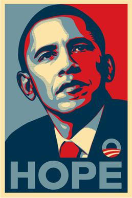
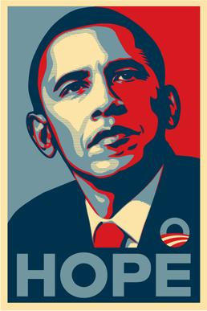
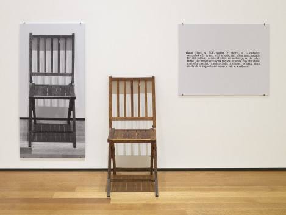
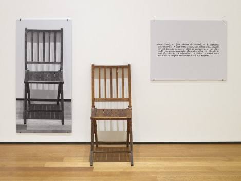

Introduction
Almost a year ago, I developed an interest in the field of furniture making (specialized in wood craftsmanship). I appreciated the idea of making something solid, most of all it was how one could work with the design throughout the whole process. The best part was that the final outcome would be physically preserved longer than a website or a poster. During the time I was doing research on furniture making, I often heard that if you know how to make a proper functional chair, then you are half way through the process of learning and understanding furniture making. At the same time I realized that furniture designers have focused on the idea of the chair for a long time. It is the ultimate object.
We are surrounded by chairs. They are everywhere, in different forms and sizes. The chair as we know have been through a long process of development to become as accessible as they are today. The history of the chair goes far back, the periods when the royal authorities ruled the lands. Chairs were mostly used by higher strata of society, particularly in the form of thrones. Sitting was a matter of statue. It was reserved for the elite. As the privilege of the chair ceased, and it became accessible, a new power seems to have developed with it. The power of the design of the chair to serve comfort, because the most important task for the furniture makers is to create the chair that is comfortable.
If the chair is the ultimate object in furniture design, then, what is its parallel in graphic design? Traditionally, many graphic designers will say that it is the poster. The posters contain the core value of graphic design which are typography, composition, images, colors and style. Moreover, the posters communicate and deliver the messages to the public.
Just like the world is in a transition from analogue to digital, graphic design is also shifting from printed matter to digital medium. In digital graphic design, the physical object disappears and the most important thing became to be the ability to code the design. The power is not the object but how well you understand and execute coding. However, not all graphic designers want to shift away from analogue to digital. The graphic designers who want to stay with analogue mediums are aware of the upcoming threat of ‘Print is dead’, which means they can no longer stay in one medium which is paper. So I realized that graphic designers are looking into other physical objects in order to express their ideas.
The purpose of this thesis is to guide my future as a (want to be) furniture maker who is based on graphic design. So I ask the question: The chair is an ultimate object in society and in furniture design, are there any parallels to this in graphic design? This question is answered in three chapters with their side researches. The first chapter is about how chair became a ultimate object in society and in furniture design. Chapter two explains why the ultimate object is the post and how it is changed over times. And lastly, chapter three is about the graphic designers who have developed their identity with other objects than printed matters.
Almost a year ago, I developed an interest in the field of furniture making (specialized in wood craftsmanship). I appreciated the idea of making something solid, most of all it was how one could work with the design throughout the whole process. The best part was that the final outcome would be physically preserved longer than a website or a poster. During the time I was doing research on furniture making, I often heard that if you know how to make a proper functional chair, then you are half way through the process of learning and understanding furniture making. At the same time I realized that furniture designers have focused on the idea of the chair for a long time. It is the ultimate object.
We are surrounded by chairs. They are everywhere, in different forms and sizes. The chair as we know have been through a long process of development to become as accessible as they are today. The history of the chair goes far back, the periods when the royal authorities ruled the lands. Chairs were mostly used by higher strata of society, particularly in the form of thrones. Sitting was a matter of statue. It was reserved for the elite. As the privilege of the chair ceased, and it became accessible, a new power seems to have developed with it. The power of the design of the chair to serve comfort, because the most important task for the furniture makers is to create the chair that is comfortable.
If the chair is the ultimate object in furniture design, then, what is its parallel in graphic design? Traditionally, many graphic designers will say that it is the poster. The posters contain the core value of graphic design which are typography, composition, images, colors and style. Moreover, the posters communicate and deliver the messages to the public.
Just like the world is in a transition from analogue to digital, graphic design is also shifting from printed matter to digital medium. In digital graphic design, the physical object disappears and the most important thing became to be the ability to code the design. The power is not the object but how well you understand and execute coding. However, not all graphic designers want to shift away from analogue to digital. The graphic designers who want to stay with analogue mediums are aware of the upcoming threat of ‘Print is dead’, which means they can no longer stay in one medium which is paper. So I realized that graphic designers are looking into other physical objects in order to express their ideas.
The purpose of this thesis is to guide my future as a (want to be) furniture maker who is based on graphic design. So I ask the question: The chair is an ultimate object in society and in furniture design, are there any parallels to this in graphic design? This question is answered in three chapters with their side researches. The first chapter is about how chair became a ultimate object in society and in furniture design. Chapter two explains why the ultimate object is the post and how it is changed over times. And lastly, chapter three is about the graphic designers who have developed their identity with other objects than printed matters.
1. SEATS OF POWER
(chair as the ultimate object)
In the very beginning, thrones were associated with the gods. “The image of a throne is loaded with symbolism. It can be used to portray a hierarchical system, demonstrate authority, or even represent an occupant’s relationship with divinity. All of these possible connotations have one thing in common: power. The throne is ultimately a symbol of absolute, undisputed power.”
The word has its origins in the Greek language. Thronos means an elevated seat, and made its way into the English language via Latin and Old French. It did not take long for the status symbol of a throne to become an appropriate choice for the highest ranking officials of politics and religion. To elevate the rulers from the commoners became a theme and thrones took on more elaborate styles as time passed. Usually the key was to make the throne so magnificent that in itself it became a symbol of power. The original symbolic meaning of the chair, which represented power, has been transmitted to modern days as a word, chairman: “The chairman is the highest officer of an organized group such as a board, a committee, or a deliberative assembly. The chair presides over meetings of the assembled group and conducts its business in an orderly fashion.”
Symbols of power are often re-appropriated into popular culture. Today the throne has once again entered our lives through TV shows such as Game of Thrones, The Borgia and more recently The Crown. All of which have a focus on royal families, hierarchies and power, both politically and symbolically. The chair seems to be an institution in itself as it functions as the center of all events in these political and royal dramas. Being South Korean myself I find important to use one example from K-pop (Korean pop). A successful boys group, Big Bang’s music video for the song Fantastic baby has several shots where the singer becomes a Napoleon-styled general or a military emperor as he sits proudly in a golden ‘emperor chair’. There are plenty more examples to draw on.
Another interesting use of the chair, or throne, is in the cult animation Akira. The character Tetsuo in Akira take position on a throne. The visual impact of the scene represents the power of the perfect human body.
In the case of both Akira, and the previously mentioned TV shows Borgia and Game of Thrones, when the characters take position on their thrones, they reach the point in each storyline where they lose control over their power. The throne acts as a catalyst in the story, unleashing latent power within its occupant that results in disaster. What I aim to show with these examples is that symbols have power.
The symbol of power, and the power of the chair, is not only present popular culture, but it is also very much present in work situations. “Consider the boss’s chair. A mute object, you might think, a mere agglomeration of steel springs and upholstery - just a place to sit. In fact, the chair chosen by top executives is a great deal more than that. It is a totem, a symbol of power, and it projects an intriguing, if subliminal, message.”
Chairs today are recognized by the names of their designers and manufacturers, some are even displayed in museums. We know the names of designers such Mies van der Rohe, Charles and Ray Eames, Finn Juhl as well as we recognize names of manufacturers like Herman Miller. Another well-known furniture designer, Bruno Mathsson said “The act of sitting comfortably is a skill, although it shouldn’t be. Instead, the manufacture of seating should be carried out with such skill that the act of sitting in them becomes quite simple.”
In history and in the current day, the chair is the ultimate object in furniture design due to different reasons: symbolizing power in the past and seeing for comfort through excellent designs in the present.
1.1 Side research: How many different chairs have you seen in your life?
(Why do we still want new chairs?)
For years and years architects and designers all over the world have been designing thousands of chairs, upright chairs and armchairs, all different types of creative chairs. I have even made one myself. But it seems that the problem to create the one ultimate chair has not yet been altogether solved, because architects and designers all over the world are still going on designing chairs, just as if all their efforts up till now had been wrong or as if they have something to prove.
A market research campaign on people’s taste in chairs has established that they must answer the following requirements: they must be comfortable, luxurious, rustic, fanciful, strictly technical and functional, broad, narrow, high, low, hard, soft, flexible, elegant, rigid, compact, large and impressive, cheap, good value, obviously expensive and socially impressive, made of one single material, and of variety of materials; while the favored materials are rare and rough, as well as refined and crude.
So there we are. Chairs must be made for indoors and out, for the drawing-room, the office, the waiting room at the doctor’s or at the railway station, for playing cards inside, for taking tea in the garden, for lunch, for the seaside, for the park, for holidays in mountains, very low with a very high back, very high with no back at all (for the bar), for boutiques, for buses, for churches, for camping, and so on.
They can be made of carved wood, curved wood, pressed wood, plasticized wood; they can be dovetailed, screwed, glued or pegged; they can be sandpapered, stained, painted, varnished, matt, semi-glossy or perfectly dazzling. And all of this goes along with all kinds of wood from poplar to ebony. Or they can be made of iron or steel, welded, bent burnished, enameled, chromium-plated, pressed, rubberized, magnetized, plated with brass or copper. They can be extruded, tubular, in square section or in oblong, in U-section, T-section, E-section, XYZ-section.
Or they can be made of aluminum, anodized, colored, natural, sandblasted, pressed, in polished sheets of perforated sheets, coated, plasticized, tinted, cast. Then we have brass, cast iron, bentwood, malacca, wickerwork, stag’s horn, elephant’s tusks…
With all these materials a good designer can make a chair that may be dismantled, a folding chair, a swivel chair, a fixed chair, a chair on castors, a chair that becomes a bed, a chair that on can raise or lower, a chair with a reclining back a rocking chair, a chair for anyone anywhere at any time. In Relax, Delux, Rex, Tex, Mux; in velvet, velveteen, cotton, canvas, travertine; in nylon, orlon, mauled, moron.
Everyone (not only users but also designers themselves too) wants a different piece of furniture and the real functional chair. You can go on for a thousand years (and maybe more) inventing new furniture all the time, following the fashions of every country, the materials that industries constantly chuck onto the market and trends. This craving for the one-off is taking hold in the world because each chair represents different ideas and messages. We have all seen thousands of chairs which are different from each other. Tell the truth. Would you too buy a chair where you are sure that you can relax even if everyone has the same model?
(chair as the ultimate object)
In the very beginning, thrones were associated with the gods. “The image of a throne is loaded with symbolism. It can be used to portray a hierarchical system, demonstrate authority, or even represent an occupant’s relationship with divinity. All of these possible connotations have one thing in common: power. The throne is ultimately a symbol of absolute, undisputed power.”
(#1)
http://www.tboake.com/443_sincity_f06.html
The word has its origins in the Greek language. Thronos means an elevated seat, and made its way into the English language via Latin and Old French. It did not take long for the status symbol of a throne to become an appropriate choice for the highest ranking officials of politics and religion. To elevate the rulers from the commoners became a theme and thrones took on more elaborate styles as time passed. Usually the key was to make the throne so magnificent that in itself it became a symbol of power. The original symbolic meaning of the chair, which represented power, has been transmitted to modern days as a word, chairman: “The chairman is the highest officer of an organized group such as a board, a committee, or a deliberative assembly. The chair presides over meetings of the assembled group and conducts its business in an orderly fashion.”
(#2)
www.wikipedia.com/chairman
Symbols of power are often re-appropriated into popular culture. Today the throne has once again entered our lives through TV shows such as Game of Thrones, The Borgia and more recently The Crown. All of which have a focus on royal families, hierarchies and power, both politically and symbolically. The chair seems to be an institution in itself as it functions as the center of all events in these political and royal dramas. Being South Korean myself I find important to use one example from K-pop (Korean pop). A successful boys group, Big Bang’s music video for the song Fantastic baby has several shots where the singer becomes a Napoleon-styled general or a military emperor as he sits proudly in a golden ‘emperor chair’. There are plenty more examples to draw on.
Another interesting use of the chair, or throne, is in the cult animation Akira. The character Tetsuo in Akira take position on a throne. The visual impact of the scene represents the power of the perfect human body.
Tetsuo makes his seat of the throne in the Olympic Stadium during the height of an epic battle that serves as the climax for the narrative. At the beginning of Akira, we see Tetsuo as a bumbling side-kick: physically weak and perpetually needing help from the stronger and braver half of the duo, Kaneda. Tetsuo resents Kaneda’s leadership, revealing his inferiority complex. After Tetsuo is taken in for scientific experimentation, his internal power is awakened, and he slowly becomes aware of his power to influence things with his mind. He goes on to use that power to dominate those around him, as he was unable to before. The choice of the Olympic throne as his seat of power is quite ironic, as it celebrates the physical strength that he never had, and envied of others. Tetsuo merges with his chair, and the power within him takes over, enveloping the world around him. Tetsuo is scared when his power starts to take over, and appeals to Kaneda for help; his loss of control is not a choice he makes.
(#3)
http://www.tboake.com/443_sincity_f06.html
In the case of both Akira, and the previously mentioned TV shows Borgia and Game of Thrones, when the characters take position on their thrones, they reach the point in each storyline where they lose control over their power. The throne acts as a catalyst in the story, unleashing latent power within its occupant that results in disaster. What I aim to show with these examples is that symbols have power.
Katsuhiro Otomo (Director). Akira, 1988
Bigbang. Fantastic Baby, Published 6 Mar 2012
The symbol of power, and the power of the chair, is not only present popular culture, but it is also very much present in work situations. “Consider the boss’s chair. A mute object, you might think, a mere agglomeration of steel springs and upholstery - just a place to sit. In fact, the chair chosen by top executives is a great deal more than that. It is a totem, a symbol of power, and it projects an intriguing, if subliminal, message.”
(#4)
It has become a tool for managing the impression of visitors, it is a question of what illusions one wants to create. Warren G. Bennis said: “It is a question of what illusions the C.E.O. wants to make. It exemplifies personal style. Does it say hierarchy, or does it create the illusion of equality? Either way, the chair's symbolism is key.” http://www.nytimes.com/1989/06/11/magazine/seats-of-power.html?pagewanted=all
(#5)
This could be one explanation as to why it is such an important object for furniture designers. It is accepted in society as a symbol of power.
http://www.nytimes.com/1989/06/11/magazine/seats-of-power.html?pagewanted=all
Chairs today are recognized by the names of their designers and manufacturers, some are even displayed in museums. We know the names of designers such Mies van der Rohe, Charles and Ray Eames, Finn Juhl as well as we recognize names of manufacturers like Herman Miller. Another well-known furniture designer, Bruno Mathsson said “The act of sitting comfortably is a skill, although it shouldn’t be. Instead, the manufacture of seating should be carried out with such skill that the act of sitting in them becomes quite simple.”
(#6)
Since the chair is the most closest to your body, the furniture designers must understand the human body in order to make a comfortable functional chair. When the chair has become a daily object, a new power seems to passed to the furniture designers. The power of the design of the chair to serve comfort, because the most important task for the furniture makers is to create the chair that is comfortable.
Lucy Ryder Richardson, 100 Midcentury Chairs, Pavilion
In history and in the current day, the chair is the ultimate object in furniture design due to different reasons: symbolizing power in the past and seeing for comfort through excellent designs in the present.
1.1 Side research: How many different chairs have you seen in your life?
(Why do we still want new chairs?)
For years and years architects and designers all over the world have been designing thousands of chairs, upright chairs and armchairs, all different types of creative chairs. I have even made one myself. But it seems that the problem to create the one ultimate chair has not yet been altogether solved, because architects and designers all over the world are still going on designing chairs, just as if all their efforts up till now had been wrong or as if they have something to prove.
A market research campaign on people’s taste in chairs has established that they must answer the following requirements: they must be comfortable, luxurious, rustic, fanciful, strictly technical and functional, broad, narrow, high, low, hard, soft, flexible, elegant, rigid, compact, large and impressive, cheap, good value, obviously expensive and socially impressive, made of one single material, and of variety of materials; while the favored materials are rare and rough, as well as refined and crude.
So there we are. Chairs must be made for indoors and out, for the drawing-room, the office, the waiting room at the doctor’s or at the railway station, for playing cards inside, for taking tea in the garden, for lunch, for the seaside, for the park, for holidays in mountains, very low with a very high back, very high with no back at all (for the bar), for boutiques, for buses, for churches, for camping, and so on.
They can be made of carved wood, curved wood, pressed wood, plasticized wood; they can be dovetailed, screwed, glued or pegged; they can be sandpapered, stained, painted, varnished, matt, semi-glossy or perfectly dazzling. And all of this goes along with all kinds of wood from poplar to ebony. Or they can be made of iron or steel, welded, bent burnished, enameled, chromium-plated, pressed, rubberized, magnetized, plated with brass or copper. They can be extruded, tubular, in square section or in oblong, in U-section, T-section, E-section, XYZ-section.
Or they can be made of aluminum, anodized, colored, natural, sandblasted, pressed, in polished sheets of perforated sheets, coated, plasticized, tinted, cast. Then we have brass, cast iron, bentwood, malacca, wickerwork, stag’s horn, elephant’s tusks…
With all these materials a good designer can make a chair that may be dismantled, a folding chair, a swivel chair, a fixed chair, a chair on castors, a chair that becomes a bed, a chair that on can raise or lower, a chair with a reclining back a rocking chair, a chair for anyone anywhere at any time. In Relax, Delux, Rex, Tex, Mux; in velvet, velveteen, cotton, canvas, travertine; in nylon, orlon, mauled, moron.
Everyone (not only users but also designers themselves too) wants a different piece of furniture and the real functional chair. You can go on for a thousand years (and maybe more) inventing new furniture all the time, following the fashions of every country, the materials that industries constantly chuck onto the market and trends. This craving for the one-off is taking hold in the world because each chair represents different ideas and messages. We have all seen thousands of chairs which are different from each other. Tell the truth. Would you too buy a chair where you are sure that you can relax even if everyone has the same model?
2. THE ULTIMATE OBJECT IN GRAPHIC DESIGN
(Is the poster the chair?)
Graphic design does not have a long history as much as other product deigns. As long as it is remembered, the medium of the paper was occupied in the graphic design for a long time, or was till not so long ago. Among all paper design works, the poster had the power to deliver ideas and messages to the public. As design historian Elizabeth Guffey notes,“As large, colourful posters began to command the spaces of public streets, markets and squares, the format itself took on a civic respectability never afforded to Victorian handbills.”
The poster was reborn in the emergent commercial contents of the nineteenth century, advertising the multitude of new goods of the industrial age. According to the French historian Max Gallo, "for over two hundred years, posters have been displayed in public places all over the world. Visually striking, they have been designed to attract the attention of passers-by, making us aware of a political viewpoint, enticing us to attend specific events, or encouraging us to purchase a particular product or service.”
Often the works of the posters identify the designer’s identity and also represented the style of the time. Now it has become an ultimate object among young designers. We study the designers and remake the inspiring posters to apply it to the modern graphic design. The first exhibition that I had in the first year in the academy was about remaking Wim Crouwel’s works. “It was actually quite difficult to avoid Wim Crouwel’s work. In the 1960s the Netherlands was inundated with posters, catalogues, stamps designed by him, even the telephone book.”
With the transition of the medium from paper to digital, the poster which should be printed lost the power of its origin. “It cannot be seen whether, or for how long, the poster will have a future. Doubts regarding its future chances are justified when we consider the possible way of life of a post-industrial society with new technological resources in an environment planned according to human requirements”
Graphic designers go out of their way trying to keep it as a symbol of power. We design posters on textiles, on extra large formats, we animate posters and present them on screens, but it still does not gain that special aura of power. Once again it could be due to the fact that the posters today are made by tools available to most people. It is a language of design that can easily be understood, and the poster therefore looses the sense of power. Like the chair in early history was for the selected few, for the Very Important People, the poster is the opposite.
Then what could perhaps be the source of the chairs power today is coding. Truly available only to those who know the language of coding well. One could argue that the younger generations all understand and know these languages, but extremely well made programs and websites are still reserved for those of special talent. Coding has become a craftsmanship.
This dichotomy – between impressing outsiders and making insiders comfortable – can sometimes lead to an schizophrenia of sorts. This one can also see happening in graphic design. In the past graphic design functioned as a trade. The products of our work had value, and was literally valuable. A good book, a well made poster, and the craft of printing had that same aura of power as the chair. The ability to read was on its own a powerful thing, it meant access to knowledge, and books represented this. The printing was not cheap in the beginning, therefore books were not available to commoners. This only worked to increase the power of the product itself.
A high percentage of the world’s inhabitants can read, books are available online and offline in libraries. The internet has created a situation where we have some kinds of information overflow. Knowledge and education are expected and demanded, especially in Asian countries. There are even abbreviations such as TLDR, which I learned from my fellow students at the Royal Academy of Art. It means Too Long Didn’t Read, referring to texts longer than a paragraph being too long to read. Reading and the language of design used in books are perhaps becoming superfluous? We have all heard the sentence “print is dead.” Designers all over the world have disagreed with this, there are stickers made saying the opposite, but perhaps it isn't the actual print that is dying, it is the power of it?
2.1 Side research: Propaganda posters
In the quest of finding a prestigious art work related to graphic design, I should mention propaganda posters. Why are they fascinating? Why do they arouse respect and admiration?
These posters became extremely common during the First and Second World Wars. Everyone knows the example ‘Uncle Sam wants you’ from the United States, trying to recruit soldiers. We even know the Rosie de Riveter poster which depicts a woman worker with the goal to motivate other women to work in factories during World War II. One of the main reasons why World War II had a huge impact on the world was from propaganda, because it promoted a great deal of industry and economic stability.
There are several more recent examples, which I was happy to find in the library from the book 'Beauty Is in the Street: A Visual Record of the May 68 Uprising’. These propaganda posters from the Atelier Populaire (Popular Workshop) were supporting the events of May 68 in France. In a certain way, I feel closer to these posters rather than other propaganda posters. I do not feel close in a personal sense, but I feel close to the fact is that these posters were printed by a group of artists and art students who studied in the Art School. Students were screen printing thousands of posters at a time. I find it fascinating that individual artists were never credited and each work was treated as the work of the collective. Their goal was to express their opinion against consumerism but also their opinion on freedom of press (during a time when many things were censored in France); other aspects that were expressed include colonialism and the status of immigrant workers. I believe that these posters were powerful reminders of the reality and pointed out important issues which needed to be spoken out at that time. Something which we should not forget is that these posters were made in a so-called critical period. What have we learned since? Do graphic designers have a certain power when it comes to communicating a message? What is the impact of a graphic designer nowadays?
The best recent example that I could find to answer my question is the influential political poster designed by Shepard Fairey’s in 2008: Barack Obama ‘HOPE’ poster. The poster became one of the most widely recognized symbols of Obama's campaign message. According to Steven Heller from The New York Times the "poster breaks the mold not only in terms of color and style but also in message and tone.” Many people considered the poster as strong, using a modernist aesthetic and expressing an effective message. I consider the poster powerful. And taking a step back, I consider propaganda posters powerful in general. Each one of them was designed with the goal to persuade, motivate or just communicate a message. I would like to conclude this chapter by emphasizing that the propaganda poster can be seen as a very important weapon.

(Is the poster the chair?)
Graphic design does not have a long history as much as other product deigns. As long as it is remembered, the medium of the paper was occupied in the graphic design for a long time, or was till not so long ago. Among all paper design works, the poster had the power to deliver ideas and messages to the public. As design historian Elizabeth Guffey notes,“As large, colourful posters began to command the spaces of public streets, markets and squares, the format itself took on a civic respectability never afforded to Victorian handbills.”
(#7)
Especially during the wartimes, it was a powerful tool, spreading propaganda and hidden messages, called propaganda. The posters certainly played an important role in these times, today we even consider some posters as art.
Guffey, op cit, p. 13
The poster was reborn in the emergent commercial contents of the nineteenth century, advertising the multitude of new goods of the industrial age. According to the French historian Max Gallo, "for over two hundred years, posters have been displayed in public places all over the world. Visually striking, they have been designed to attract the attention of passers-by, making us aware of a political viewpoint, enticing us to attend specific events, or encouraging us to purchase a particular product or service.”
(#8)
While ancient forms of posting may have been unique messages tethered to a particular location, the modern poster was a product of the age of mechanical reproduction.
Gallo, Max, The Poster in History, (2002) W.W. Norton
Often the works of the posters identify the designer’s identity and also represented the style of the time. Now it has become an ultimate object among young designers. We study the designers and remake the inspiring posters to apply it to the modern graphic design. The first exhibition that I had in the first year in the academy was about remaking Wim Crouwel’s works. “It was actually quite difficult to avoid Wim Crouwel’s work. In the 1960s the Netherlands was inundated with posters, catalogues, stamps designed by him, even the telephone book.”
(#9)
This was the sentence from Karel Martens.
IDEA magazine #323, a feature issue about Crouwel and his work
With the transition of the medium from paper to digital, the poster which should be printed lost the power of its origin. “It cannot be seen whether, or for how long, the poster will have a future. Doubts regarding its future chances are justified when we consider the possible way of life of a post-industrial society with new technological resources in an environment planned according to human requirements”
(#10)
Josep and Shizuko Müller-Brockmann speculated about its future demise in 1971. The Müller-Brockmann’s prediction regarding the future of the poster is remarkably prescient about the impending technological future, with descriptions of things such as videophones and the connectivity of something resembling the Internet. Despite the accuracy of their vision, technology did not render the poster obsolete as a means of communication. Instead, technology expanded the tools, methods, and systems of production and distribution, freeing the poster from its typical burden of representation while sentencing it to a different kind of future. Their conclusion that “retrospectively, the poster will be judged as a temporary solution of questionable information value,” Josef and Shizuko Müller-Brockmann, History of the Poster (Zürich:ABC Verlag, 1971), 239
(#11)
still leaves room for the poster to possess a greater symbolic value.
Müller_Brockmann, History of the Poster, 239
Graphic designers go out of their way trying to keep it as a symbol of power. We design posters on textiles, on extra large formats, we animate posters and present them on screens, but it still does not gain that special aura of power. Once again it could be due to the fact that the posters today are made by tools available to most people. It is a language of design that can easily be understood, and the poster therefore looses the sense of power. Like the chair in early history was for the selected few, for the Very Important People, the poster is the opposite.
Then what could perhaps be the source of the chairs power today is coding. Truly available only to those who know the language of coding well. One could argue that the younger generations all understand and know these languages, but extremely well made programs and websites are still reserved for those of special talent. Coding has become a craftsmanship.
This dichotomy – between impressing outsiders and making insiders comfortable – can sometimes lead to an schizophrenia of sorts. This one can also see happening in graphic design. In the past graphic design functioned as a trade. The products of our work had value, and was literally valuable. A good book, a well made poster, and the craft of printing had that same aura of power as the chair. The ability to read was on its own a powerful thing, it meant access to knowledge, and books represented this. The printing was not cheap in the beginning, therefore books were not available to commoners. This only worked to increase the power of the product itself.
Graphic design works in the world of the Press, of books, of printed advertisements and everywhere the printed word appears, whether on a sheet of paper or a screen. However, the definition of graphic design that has caused so much confusion in recent times, and allowed so many fast ones to be pulled, is now losing its prestige. Design is once more becoming a trade (…)
(#12)
Bruno Munari, Design as Art, (1966), Penguin classics
A high percentage of the world’s inhabitants can read, books are available online and offline in libraries. The internet has created a situation where we have some kinds of information overflow. Knowledge and education are expected and demanded, especially in Asian countries. There are even abbreviations such as TLDR, which I learned from my fellow students at the Royal Academy of Art. It means Too Long Didn’t Read, referring to texts longer than a paragraph being too long to read. Reading and the language of design used in books are perhaps becoming superfluous? We have all heard the sentence “print is dead.” Designers all over the world have disagreed with this, there are stickers made saying the opposite, but perhaps it isn't the actual print that is dying, it is the power of it?
2.1 Side research: Propaganda posters
In the quest of finding a prestigious art work related to graphic design, I should mention propaganda posters. Why are they fascinating? Why do they arouse respect and admiration?
These posters became extremely common during the First and Second World Wars. Everyone knows the example ‘Uncle Sam wants you’ from the United States, trying to recruit soldiers. We even know the Rosie de Riveter poster which depicts a woman worker with the goal to motivate other women to work in factories during World War II. One of the main reasons why World War II had a huge impact on the world was from propaganda, because it promoted a great deal of industry and economic stability.
There are several more recent examples, which I was happy to find in the library from the book 'Beauty Is in the Street: A Visual Record of the May 68 Uprising’. These propaganda posters from the Atelier Populaire (Popular Workshop) were supporting the events of May 68 in France. In a certain way, I feel closer to these posters rather than other propaganda posters. I do not feel close in a personal sense, but I feel close to the fact is that these posters were printed by a group of artists and art students who studied in the Art School. Students were screen printing thousands of posters at a time. I find it fascinating that individual artists were never credited and each work was treated as the work of the collective. Their goal was to express their opinion against consumerism but also their opinion on freedom of press (during a time when many things were censored in France); other aspects that were expressed include colonialism and the status of immigrant workers. I believe that these posters were powerful reminders of the reality and pointed out important issues which needed to be spoken out at that time. Something which we should not forget is that these posters were made in a so-called critical period. What have we learned since? Do graphic designers have a certain power when it comes to communicating a message? What is the impact of a graphic designer nowadays?
The best recent example that I could find to answer my question is the influential political poster designed by Shepard Fairey’s in 2008: Barack Obama ‘HOPE’ poster. The poster became one of the most widely recognized symbols of Obama's campaign message. According to Steven Heller from The New York Times the "poster breaks the mold not only in terms of color and style but also in message and tone.” Many people considered the poster as strong, using a modernist aesthetic and expressing an effective message. I consider the poster powerful. And taking a step back, I consider propaganda posters powerful in general. Each one of them was designed with the goal to persuade, motivate or just communicate a message. I would like to conclude this chapter by emphasizing that the propaganda poster can be seen as a very important weapon.

'Hope' poster
'I want you' poster
'May68' poster
3. GRAPHIC DESIGNERS CROSSING BORDERS
The analogue graphic design world is still different to digital graphic design in terms of what the ultimate object is. The analogue graphic designers do acknowledge the trend of ‘Print is Dead’, so that the poster is gradually losing its power as the ultimate object. Due to this, these graphic designers are looking into other objects in order to express their desired concepts.
It is near impossible to make the perfect poster or the perfect chair, because the ideal of what is perfect keeps changing. It is a matter of perception, as I talked about in the previous chapter. What is interesting to look at when discussing this is the abundance of graphic designers turned product designers. It has been common that designers, and architects for that matter, branch out from their original field of work. For a long time the architect was the product designer, the type-designer. One title to rule them all but design today seems much more separated, or specialized. But there are exceptions, and in this chapter I will look at some of these.
“A wise man once said, the difference is in the details. We think the difference is having the balls to do it.”
Stretching the boundaries of graphic design seems to become more important for our field of work. Perhaps it is due to the rapid change in technology, making graphic design less of a craft, and turning it into a know-how of programs. Perhaps graphic designers are stretching the boundaries because our work is fast. It is made as quickly as it fades away. The products of graphic design have the shortest life span compared to other fields of design, art and architecture. Or lastly, perhaps we need the broadening of our field of work as a natural result of being designers, being interested in how things are made and needing the challenge to explore more formats than the printed matter.
What makes Bureau an especially interesting example in this text is their Moe Chair, which is a redesign or revival of the old classroom chairs originally used in Singapore. The name is the acronym of the Ministry of Education. “The idea came about while Kai was spring cleaning and found an old picture from 1989. Unable to find technical drawings or actual pieces of the original chairs, we recreated our designs from memory and whatever picture references we could get from tattered school yearbooks.”
Another example of graphic design turned into product design is Till Wiedeck’s ‘Critical Objects’. Till Wiedeck describes his works as: “‘Critical Objects’ is a series of items that balance on the border between functional furniture and sculptural form without taking a definite position within either concept. In this self initiated project, graphic design studio HelloMe explores the curious nature of everyday objects.”
Till Wiedeck has created objects that are only allegedly functional. His Critical Objects are furniture made out of tubular steel, wood, concrete and luxurious Calacatta marble. With their clear, almost constructivist design, their static structure is exposed. But ultimately they are distorted, and their function is deferred and contorted, Till Wiedeck’s objects undermine the iconography of design.
The underlying concept of ‘Critical Objects’ is based on the thought that reactions to a matter are not simply derived from the perception of the object itself but what is attached to a said object is an emotional reaction. The immediate action and reaction to a form can be restricted by the conventional ingrained response — you see something with four legs and a surface, your mind tells you it is a table, because you learned that it is a table. ‘Critical Object’ challenges the perception of the initial disposition to the object by altering the context of the subject. ‘Critical Objects’ is the result of an experiment without any predetermined goal. Through the re-interpretation of everyday objects and the rearrangement of their functional properties, the fundamental nature of the form is changed. Their function is reduced, amplified, or even annihilated. Hereby a new perspective of their altered potentials is achieved. The real challenge, however, lies with the recipient – the challenge of one’s very own perception of things.
In the very recent years, not only furniture designers but also graphic designers started to make chairs. In some portfolio websites of graphic designers, you may find a project about a chair. It does not matter if the designer understands the complex functionality of chair but the concept or the idea behind of it is the essential. You may not need to construct one yourself but just successfully deliver the sketch of the chair to a furniture maker. In that sense, only the concept has been survived among all the design principles such as functionality, beauty, technology, and craftsmanship.
Nevertheless, graphic designers can use typography and images to deliver their own messages, some of them choose other materials such as wood, plastic, marble, metal, fabric and glass. Maybe it is logical to look for other mediums than paper due to the fact that graphic design world is threatened by the unstoppable change of the world to digital. We need to survive this world and perhaps those materials should be kept in the survival kit of graphic design.
3.1 Side research: One and Three Chairs
(The perception of things)
Before I was writing this thesis, I was quite obsessed with actual functional chairs. I tried to find out what could be the ultimate chair in already existing chairs from the famous furniture designers. And I desired to define the ultimate chair with its design, materials, functionality and innovative aspect. While I was doing research on famous chairs, I came to the conclusion that no such a thing as an ultimate chair exists. One of the great furniture designers, Hans J. Wegner said “The chair does not exist. The good chair is a task one is never completely done with.”
As simply an admirer of chairs, what I could do now was to conduct research on other aspects of the chair rather than design and construction. In this chapter I will look into the work of Joseph Kosuth, One and Three Chairs. In this art work of Joseph Kosuth, he did not create a chair himself nor took a photograph of the chair nor write the definition of a chair. But the work is powerful because of its concept.

Anne Rorimer describes Kousuth’s work as extensions of the readymade principle, in which functional, everyday objects are situated within a tripartite system: “Having been extracted from the “real” world of use and re-placed to function within the world of art, the objects re-present themselves. Kosuth thereby represented the idea of representation per se through photographic and/or linguistic means. As the combination of three equal parts, a photograph, an object, and a text, these works are statements of fact, not simply about external reality, but about the means to represent it.”
For me, the work ‘One and Three Chairs’ is the ultimate work that puts both mediums, printed matter and the actual object, together and gives out a concept. The conceptual artist does not stick to one type of medium, but the focus is on the concept. He encourages to be creative on how to get to your concept or giving a message or idea, by using the chair, the text, the image and the definition.
The analogue graphic design world is still different to digital graphic design in terms of what the ultimate object is. The analogue graphic designers do acknowledge the trend of ‘Print is Dead’, so that the poster is gradually losing its power as the ultimate object. Due to this, these graphic designers are looking into other objects in order to express their desired concepts.
It is near impossible to make the perfect poster or the perfect chair, because the ideal of what is perfect keeps changing. It is a matter of perception, as I talked about in the previous chapter. What is interesting to look at when discussing this is the abundance of graphic designers turned product designers. It has been common that designers, and architects for that matter, branch out from their original field of work. For a long time the architect was the product designer, the type-designer. One title to rule them all but design today seems much more separated, or specialized. But there are exceptions, and in this chapter I will look at some of these.
“A wise man once said, the difference is in the details. We think the difference is having the balls to do it.”
(#13)
This is how The Bureau from Singapore introduces themselves on their website. Bureau is a design studio that originated as a graphic design studio that also experiments with other design forms such as furniture, spatial and product design, as well as traditional graphic design such as letterpress and silkscreen printing. They continue their own description saying: “We believe in stretching the boundaries of graphic design, while maintaining a strong commitment to artistry and quality in every work that we do.” http://thebureau.com.sg/studio/
(#14)
http://thebureau.com.sg/studio/
Stretching the boundaries of graphic design seems to become more important for our field of work. Perhaps it is due to the rapid change in technology, making graphic design less of a craft, and turning it into a know-how of programs. Perhaps graphic designers are stretching the boundaries because our work is fast. It is made as quickly as it fades away. The products of graphic design have the shortest life span compared to other fields of design, art and architecture. Or lastly, perhaps we need the broadening of our field of work as a natural result of being designers, being interested in how things are made and needing the challenge to explore more formats than the printed matter.
What makes Bureau an especially interesting example in this text is their Moe Chair, which is a redesign or revival of the old classroom chairs originally used in Singapore. The name is the acronym of the Ministry of Education. “The idea came about while Kai was spring cleaning and found an old picture from 1989. Unable to find technical drawings or actual pieces of the original chairs, we recreated our designs from memory and whatever picture references we could get from tattered school yearbooks.”
(#15)
Bureau designed six versions of the Moe Chair as a way of showing the versatility of this old school design. So the studio works with the chair in schools, plays with the naming from the Ministry of Education, and borrows from the originals designs’ versatility. But that does not explain why they move from their original field of work and over to product design. "We're not only interested in printed works that are ephemeral but hope to create works that are long lasting and hopefully outlive us.” http://thebureau.com.sg/works/moe-chair/
(#16)
Bureau broadened their field of work to be able to challenge themselves with something that is lasting, something that has a longer lifespan than graphic designs products can have.
http://www.apartmenttherapy.com/graphic-designer-to-furniture-designer-the-moe-chair-164977
Bureau, Moe Chairs
Till Wiedeck’s ‘Critical Objects’
Another example of graphic design turned into product design is Till Wiedeck’s ‘Critical Objects’. Till Wiedeck describes his works as: “‘Critical Objects’ is a series of items that balance on the border between functional furniture and sculptural form without taking a definite position within either concept. In this self initiated project, graphic design studio HelloMe explores the curious nature of everyday objects.”
(#17)
http://hellome.studio/2012/10/critical-objects/
Till Wiedeck has created objects that are only allegedly functional. His Critical Objects are furniture made out of tubular steel, wood, concrete and luxurious Calacatta marble. With their clear, almost constructivist design, their static structure is exposed. But ultimately they are distorted, and their function is deferred and contorted, Till Wiedeck’s objects undermine the iconography of design.
The underlying concept of ‘Critical Objects’ is based on the thought that reactions to a matter are not simply derived from the perception of the object itself but what is attached to a said object is an emotional reaction. The immediate action and reaction to a form can be restricted by the conventional ingrained response — you see something with four legs and a surface, your mind tells you it is a table, because you learned that it is a table. ‘Critical Object’ challenges the perception of the initial disposition to the object by altering the context of the subject. ‘Critical Objects’ is the result of an experiment without any predetermined goal. Through the re-interpretation of everyday objects and the rearrangement of their functional properties, the fundamental nature of the form is changed. Their function is reduced, amplified, or even annihilated. Hereby a new perspective of their altered potentials is achieved. The real challenge, however, lies with the recipient – the challenge of one’s very own perception of things.
In the very recent years, not only furniture designers but also graphic designers started to make chairs. In some portfolio websites of graphic designers, you may find a project about a chair. It does not matter if the designer understands the complex functionality of chair but the concept or the idea behind of it is the essential. You may not need to construct one yourself but just successfully deliver the sketch of the chair to a furniture maker. In that sense, only the concept has been survived among all the design principles such as functionality, beauty, technology, and craftsmanship.
Nevertheless, graphic designers can use typography and images to deliver their own messages, some of them choose other materials such as wood, plastic, marble, metal, fabric and glass. Maybe it is logical to look for other mediums than paper due to the fact that graphic design world is threatened by the unstoppable change of the world to digital. We need to survive this world and perhaps those materials should be kept in the survival kit of graphic design.
3.1 Side research: One and Three Chairs
(The perception of things)
Before I was writing this thesis, I was quite obsessed with actual functional chairs. I tried to find out what could be the ultimate chair in already existing chairs from the famous furniture designers. And I desired to define the ultimate chair with its design, materials, functionality and innovative aspect. While I was doing research on famous chairs, I came to the conclusion that no such a thing as an ultimate chair exists. One of the great furniture designers, Hans J. Wegner said “The chair does not exist. The good chair is a task one is never completely done with.”
(#18)
In fact, these words should come out from my mouth after being working as a furniture maker for more than 40 years, and then I could truly understand the meaning of the ultimate chair.
Lucy Ryder Richardson, 100 Midcentruy Chairs, (2016), Pavilion
As simply an admirer of chairs, what I could do now was to conduct research on other aspects of the chair rather than design and construction. In this chapter I will look into the work of Joseph Kosuth, One and Three Chairs. In this art work of Joseph Kosuth, he did not create a chair himself nor took a photograph of the chair nor write the definition of a chair. But the work is powerful because of its concept.

Josef Kosuth, One and Three Chairs, 1965.
In One and Three Chairs, Joseph Kosuth represents one chair three ways: as a manufactured chair, as a photograph, and as a copy of a dictionary entry for the word “chair.” The installation is thus composed of an object, an image, and words. Kosuth didn’t make the chair, take the photograph, or write the definition; he selected and assembled them together. But is this art? And which representation of the chair is most “accurate”? These open-ended questions are exactly what Kosuth wanted us to think about when he said that “art is making meaning.” By assembling these three alternative representations, Kosuth turns a simple wooden chair into an object of debate and even consternation, a platform for exploring new meanings.
(#19)
https://www.moma.org/learn/moma_learning/joseph-kosuth-one-and-three-chairs-1965
Anne Rorimer describes Kousuth’s work as extensions of the readymade principle, in which functional, everyday objects are situated within a tripartite system: “Having been extracted from the “real” world of use and re-placed to function within the world of art, the objects re-present themselves. Kosuth thereby represented the idea of representation per se through photographic and/or linguistic means. As the combination of three equal parts, a photograph, an object, and a text, these works are statements of fact, not simply about external reality, but about the means to represent it.”
(#20)
Anne Rorimer, “Joseph Kosuth,” in Reconsidering the object of Art (Lost Angeles: Museum of Contemporary ARt, 1995), p. 150.
For me, the work ‘One and Three Chairs’ is the ultimate work that puts both mediums, printed matter and the actual object, together and gives out a concept. The conceptual artist does not stick to one type of medium, but the focus is on the concept. He encourages to be creative on how to get to your concept or giving a message or idea, by using the chair, the text, the image and the definition.
Conclusion
In the past 5.5 years of the study in graphic design, I experienced the transition of the world from analogue to digital and its influence on graphic design field. I still remember that we used to focus on making books and posters. Within the time the new tools such as processing, coding, oculus, etc., have been introduced to us. It seems very cool in the beginning but eventually I did not learn to appreciate them. This is because of my nature which loves to touch and feel the physical objects. Gradually, I admitted the fact that I am on the traditional type of designer who appreciate the craftsmanship.
If I look back of my study in KABK, I was trained to think as an artist designer which means that concept or an idea should come first than the aesthetic. I often heard the term “Fuck aesthetic” (I don’t remember who said it but it had an impact on me). Also, in the earlier years of the studies, the teachers encouraged us to use all the workshops available in the school in order to produce the artwork. At some point, another quote was vogue to say, “Graphic design is everything.” By saying that, not only paper designed works were considered as a graphic design job but also other mediums could be graphic designers work.
My recent focus or interest is furniture making specialized in wood. Before I wrote this thesis, I thought that switching the field from graphic design to furniture design was the only solution for my future. However, with all the researches and many other proven examples, I realized that I can still remain as a graphic designer. Rather, I could be a unique designer who understands both graphic design and furniture design.
It seems to me that the expansion of the field of graphic design comes from an urge to make an impact, to make something that lasts. Probably, the next task for the future graphic designers is to find the next ultimate object of their own, by maybe even crossing borders and looking into other objects in other fields. Therefore, I can conclude this thesis by encouraging graphic design students to not limit themselves to explore diverse mediums.
In the past 5.5 years of the study in graphic design, I experienced the transition of the world from analogue to digital and its influence on graphic design field. I still remember that we used to focus on making books and posters. Within the time the new tools such as processing, coding, oculus, etc., have been introduced to us. It seems very cool in the beginning but eventually I did not learn to appreciate them. This is because of my nature which loves to touch and feel the physical objects. Gradually, I admitted the fact that I am on the traditional type of designer who appreciate the craftsmanship.
If I look back of my study in KABK, I was trained to think as an artist designer which means that concept or an idea should come first than the aesthetic. I often heard the term “Fuck aesthetic” (I don’t remember who said it but it had an impact on me). Also, in the earlier years of the studies, the teachers encouraged us to use all the workshops available in the school in order to produce the artwork. At some point, another quote was vogue to say, “Graphic design is everything.” By saying that, not only paper designed works were considered as a graphic design job but also other mediums could be graphic designers work.
My recent focus or interest is furniture making specialized in wood. Before I wrote this thesis, I thought that switching the field from graphic design to furniture design was the only solution for my future. However, with all the researches and many other proven examples, I realized that I can still remain as a graphic designer. Rather, I could be a unique designer who understands both graphic design and furniture design.
It seems to me that the expansion of the field of graphic design comes from an urge to make an impact, to make something that lasts. Probably, the next task for the future graphic designers is to find the next ultimate object of their own, by maybe even crossing borders and looking into other objects in other fields. Therefore, I can conclude this thesis by encouraging graphic design students to not limit themselves to explore diverse mediums.
RESOURCES
Books
Bruno Munari. (1944). Seeking comfort in an uncomfortable chair, Domus.
Lucy Ryder Richardson. (2016). 100 Midcentruy Chairs and their stories, London:Pavilion Books Company Ltd.
Ruban Pater. (2016). The politics of design, BIS.
John Berger. (1972). Ways of seeing, Penguin Group.
Bruno Munari. (2008). Design as art, Penguin Group.
Marijke Kuper & Lex Reitsma. (2012). Rietveld’s Chair, nai010 uitgevers.
O.Macel & S.Woertman & C.v.Wijk. (2008). Chairs Catalogue of the Delft Faculty of Architecture Collection, 010 Publishers.
Beauty Is in the Street: A Visual Record of the May 68 Uprising.
Graphic Design: Now in Production, Walker Art Center.
Internet sources
https://en.wikipedia.org/wiki/Chairman
http://www.academia.edu/1478449/A_Short_History_of_Chairs
http://www.modernfurnituredesigners.interiordezine.com/books/
http://gameofthrones.wikia.com/wiki/Iron_Throne
https://asianmusicinvasion.wordpress.com/2012/03/09/bigbang-fantastic-baby/
http://www.tboake.com/443_sincity_f06.html
http://www.e-flux.com/journal/29/68078/one-and-three-ideas-conceptualism-before-during-and-after-conceptual-art/
http://faculty.ucr.edu/~ewkotz/texts/Kotz-2005-October111.pdf
http://www.iconofgraphics.com/wim-crouwel/
https://www.creativereview.co.uk/may-1968-a-graphic-uprising/
http://www.nytimes.com/1989/06/11/magazine/seats-of-power.html?pagewanted=all
Video
Bigbang. Fantastic Baby, Published 6 Mar 2012 YouTube
Katsuhiro Otomo (Director). Akira, 1988
B. Bertolucci (Director). The dreamers, 2003
Lecture
Sophie Berrebi & Carola Hein. Tatami Architecture, (20th September 2016), Het Nieuwe Instituut.
Tabita Rezaire & Ruben Pater & Egbert Alejandro Martina & Shahab Zehtabchi & Amal Alhaag.
Decolonizing Design, (29th September 2016), Het Nieuwe Instituut.
Bruno Munari. (1944). Seeking comfort in an uncomfortable chair, Domus.
Lucy Ryder Richardson. (2016). 100 Midcentruy Chairs and their stories, London:Pavilion Books Company Ltd.
Ruban Pater. (2016). The politics of design, BIS.
John Berger. (1972). Ways of seeing, Penguin Group.
Bruno Munari. (2008). Design as art, Penguin Group.
Marijke Kuper & Lex Reitsma. (2012). Rietveld’s Chair, nai010 uitgevers.
O.Macel & S.Woertman & C.v.Wijk. (2008). Chairs Catalogue of the Delft Faculty of Architecture Collection, 010 Publishers.
Beauty Is in the Street: A Visual Record of the May 68 Uprising.
Graphic Design: Now in Production, Walker Art Center.
Internet sources
https://en.wikipedia.org/wiki/Chairman
http://www.academia.edu/1478449/A_Short_History_of_Chairs
http://www.modernfurnituredesigners.interiordezine.com/books/
http://gameofthrones.wikia.com/wiki/Iron_Throne
https://asianmusicinvasion.wordpress.com/2012/03/09/bigbang-fantastic-baby/
http://www.tboake.com/443_sincity_f06.html
http://www.e-flux.com/journal/29/68078/one-and-three-ideas-conceptualism-before-during-and-after-conceptual-art/
http://faculty.ucr.edu/~ewkotz/texts/Kotz-2005-October111.pdf
http://www.iconofgraphics.com/wim-crouwel/
https://www.creativereview.co.uk/may-1968-a-graphic-uprising/
http://www.nytimes.com/1989/06/11/magazine/seats-of-power.html?pagewanted=all
Video
Bigbang. Fantastic Baby, Published 6 Mar 2012 YouTube
Katsuhiro Otomo (Director). Akira, 1988
B. Bertolucci (Director). The dreamers, 2003
Lecture
Sophie Berrebi & Carola Hein. Tatami Architecture, (20th September 2016), Het Nieuwe Instituut.
Tabita Rezaire & Ruben Pater & Egbert Alejandro Martina & Shahab Zehtabchi & Amal Alhaag.
Decolonizing Design, (29th September 2016), Het Nieuwe Instituut.